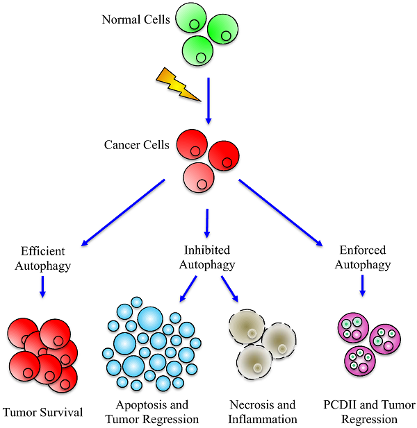
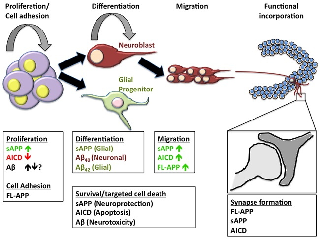
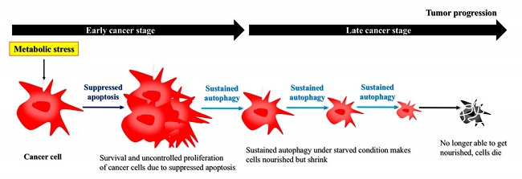

АУТОФАГИЯ

Всем привет! Пару сюжетов назад был выпуск про периодические голодание, где были приведены доказательства его позитивного действия при самых разных состояниях. Сразу напомню, что основные профиты есть, когда у вас есть лишний жирок на животе или ляшках и когда голод непродолжительный, около 16 часов. В том ролике было много комментов об аутофагии, но ни одного упоминания в самом ролике. Почему? Начнем по порядку!
Аутофагия получила широкую огласку довольно недавно в 2016 году, после вручения Нобелевской Премии за ее, так сказать, доказательство.
Что такое Аутофагия
Чтобы не цитировать википедию, скажу кратко своими словами: «Это процесс самопожирания клеток, внутри одного организма». Звучит страшно, но это есть и плюс и минус.
{kind=link}
К сожалению, если вы начнете гуглить про нее, то будете видеть кучу заголовков, что она продлевает жизнь/убивает рак и т.д. И главное – что она активируется с помощью голода!
Тут происходит отчасти софизм. Да, аутофагия растет от голода! Да, умеренный голод помогает в разных заболеваниях! Но нет четкой связи, что именно аутофагия лечит!
И так же! Не сваливайтесь в какой-то экзорцизм с этим голодом и не надо голодать слишком долго!
Голод – это многофакторный процесс, аутофагия лишь один из факторов.
{kind=link}
Сам я первое время тоже замечал лишь плюсы, но сейчас пишу можно сказать книгу о биохакинге и перебираю кучу исследований. Сомнения в аутофагии возникли не по причине, что хороший процесс не назовут аутофагией)) А из-за данных, что гормон эстрадиол и аутофагия обратнопропорциональны, покрайней мере для некоторых процессов в мозге и болезней свзяанных с ним.
Короче Эстрадиол лечит нейродегенеративные заболевания и улучшает работу мозга! Чем его больше – тем меньше аутофагии и наоборот (Ссылка 1 , 2). Но иногда эстрадиол увеличивает аутофагию, и это уже странно (3 , 4 ). Не все так однозначно.
Польза Аутофагии
Нейрогенез
Начнем с одной из наших основных тем – интеллект. В исследовании, опубликованном только в этом месяце сообщалось, что аутофагия помогает нейрогенезу. Или созданию новых нервных клеток из стволовых клеток мозга (5 , 6). Да, даже во взрослом мозге (7)! Этот процесс пока слабо изучен и есть много хейтеров нейрогенеза (8). Так что смотрите исследования самостоятельно.
В чем фишка нейрогенеза? В некотором обновлении мозга. Это не кардинальные изменения, а больше тактические и растянутые во времени.
В общем, первый плюс пожирания клеток другими клетками – функционирование мозга.
{kind=link}
Лечение Аутофагией
Туберкулез, свежие данные (9 , 10). Палочка Коха развивает это заболевание. Активация аутофагии различными лекарственными средствами может представлять собой перспективную стратегию лечения против этих бактерий, даже для лекарственно-устойчивых штаммов.
Раковые заболевания – это одна из самых частых причин смерти. Аутофагия тут действует двояко. На разных стадиях и для разных видов рака она работает как в +, так и в – (11). Осторожно можно сказать, что помогает скорее на начальных стадиях (12).
Для рака печени отдельно подчеркиваются преимущества аутофагии (13). Хотя печень итак один из самых регенерируемых органов нашего тела. 
{kind=link}
Аутофагия может лечить Болезнь Альцгеймера, или ухудшение памяти (14). Модели на животных показали, что аутофагия обычно функционирует как защитный фактор для этого заболевания.
Идем дальше!
Ожирение увеличивает риск сердечно-сосудистых заболеваний, сахарного диабета 2-го типа и развития рака. Кето-диета и в целом, ограничение питания по времени запускают аутофагию, необходимую для того же сброса лишнего жира (15). Что уже снижает прогрессирование этих заболеваний.
И напоследок!
Инфекции
Аутофагия понимается еще и как врожденный механизм борьбы с разными вирусами и инфекциями. Что-то вроде поддержки иммунной системы или как ее часть. Когда какая-то зараза лезет в ваш организм аутофагия ее грубо говоря «жрет» (16 , 17 , 18).
Вред Аутофагии
Основной недостаток — Где гарантия умирания только вредных веществ?
Взять тот же рак, были упоминания, что при некотором стечении обстоятельств, рак даже сильнее прогрессирует (19). Сейчас огромная проблема понять, как запустить гибель именно вредных соединений (20).
Взять даже голод, вот цитата из исследования: «Мы пришли к выводу, что как периодическое голодание, так и ограничение калорий, играют роль в усилении аутофагии, что свидетельствует о том, что аутофагия индуцируется в самых разных тканях и органах в ответ на лишение пищи» (21). Ключевой момент — «в самых разных». Это как бомбардировка на большой площади, это не снайперский выстрел по тому же раку.
{kind=link}
Так вот пока нет гарантии, что аутофагия работает четко и только положительно! И не нужно становиться ярым фанатом этого процесса! А то в выпуске о голоде уже пошли сообщения, что типо давайте голодать 3 дня или неделю. Это уже крайность! Вероятно даже больше одного дня в неделю – это плохо! Этот выпуск делается исключительно для того, чтобы избежать недопонимания! И не наделять аутофагию какой-то святостью!
Что делать
Теперь вы знаете противоречия об аутофагии, и назревает вопрос: как к ней относится? И ответ тут такой: любое вещество и лекарство и яд в зависимости от дозировки. В случае если вы хорошо понимаете этот процесс и знаете, что именно вам есть смысл раскручивать аутофагию, то делайте это. Для всех остальных – мера.
{kind=link}
Поймите правильно! Для такого сложного процесса нет четких сторон. Тут мы говорим лишь о статистической направленности. Типо 7 из 10 человек испытают пользу для лечения какого-то заболевания, 3 из 10 – вред или абсолютно ничего.
Помимо голода помочь аутофагии может мелатонин, об этом много упоминаний в pubmed, но заголовки в новостях лишь об ограничении питания. Мелатонин – это гормон сна, есть как добавка, но можно и это лучше – 8 часов (22). Сон не заменит ничто! Еще одна добавка для аутофагии, помогающая с некоторыми видами рака – Куркумин (23), о ней мы упоминаем с весны 2016 года.
{kind=link}
Итог:
— Отличайте пользу умеренного голода (если у тебя нет недовеса) и аутофагию. Голод включает аутофагию, как одежда включает футболки, но голод не есть аутофагия как одежда не есть только футболки.
— Отдельно аутофагия, реально полезна при некоторых заболеваниях
— Чрезмерно раскрученный этот процесс для абсолютно нормального человека – это вред.
Но сейчас неясно каким образом можно его чрезмерно раскрутить: мелатонином и куркумином с легким голодом наврятли можно себе сильно навредить. Так что вред пока есть только в теории. Разве что при очень большом стечении обстоятельств.
Что ж, это был необходимый выпуск. И его смысл, в очередной раз сказать, что нет только плохого и только хорошего, все зависит от условий и дозы. Надеюсь выпуск был полезен! Удачи и до скорого!